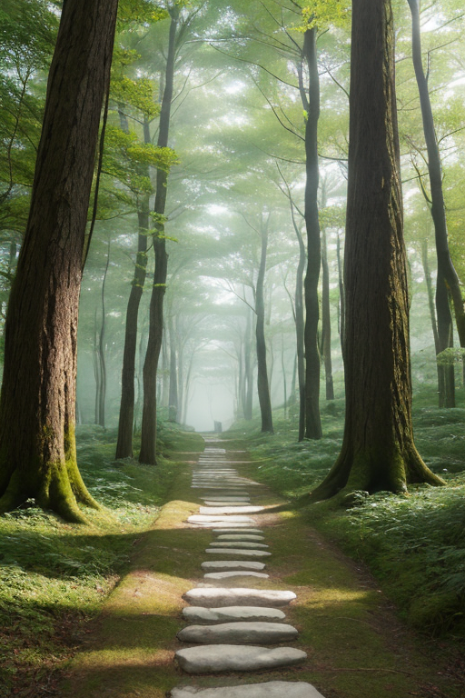
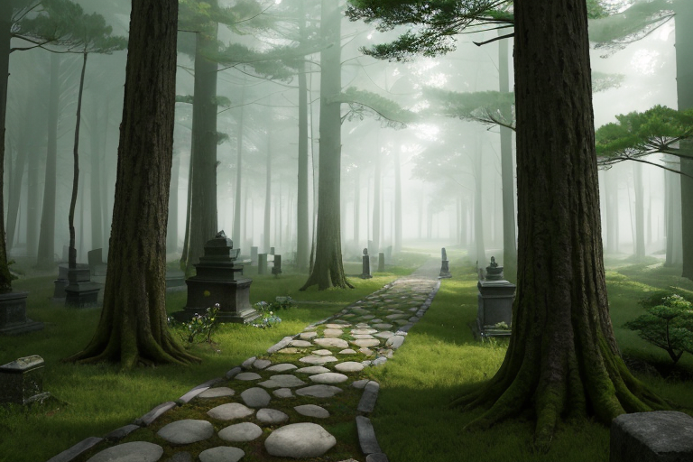
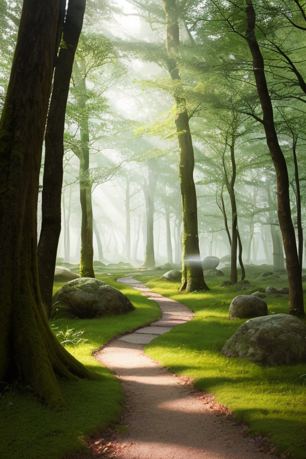
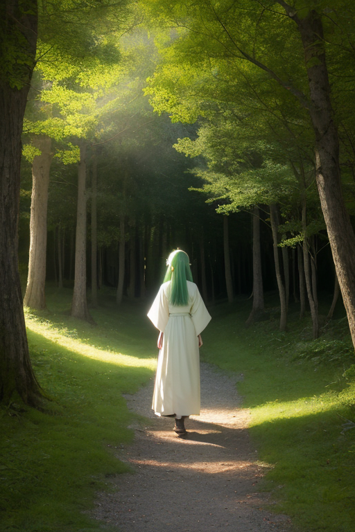

第一章「現れの和歌山」
あなたはまだ気づいていない。この土地にも、王がいることを。
熊野古道の石畳は、苔と杉の根に覆われ、千年の祈りの重みで滑らかになっている。巡礼者の足音は、深い緑に吸い込まれるように消える。高野山の奥之院。無数の灯籠が揺らめく闇は、音さえも拒むような深い静寂に満ちていた。ここは、歪みの列島の中でも特に濃密な「聖静域」――世界線「静律線」が地上に顕現した場所である。
その静寂の中心に、彼は立っていた。白と緑の光を纏った、優しい眼差しの青年。キイリア・パスウェイ、巡礼路と光道の王。彼の役目は、この地に蓄積される人々の祈りや思いの「信仰波」を安定させ、地殻の歪みが急激な破断を起こさぬよう、微かに調整することだ。彼は災害を消せない。ただ、祈りが地中に染み渡るように、圧力を分散させる。
傍らには、主席妖精パセラが佇む。彼女の手から放たれる微光が、古道沿いに流れる目に見えぬ信仰の流れを、優しく整えていく。「道は、続いていますか」彼の問いかけは、風にも、木々のざわめきにもならず、静寂そのものとして空間に滲んだ。

第二章 歪みの兆候
熊野古道の石畳は、深い杉木立の間に、ひっそりと続いていた。巡礼者の足音は少なく、代わりに、この道そのものが発する微かな「音」を、キイリアは聞き分けていた。それは、長い年月をかけてこの地に刻まれた祈りの記憶、信仰の流れそのものの響きだった。
しかし近頃、その流れに、かすかな「澱み」が生じ始めていた。遠くの海溝で蓄積される地殻の圧力とは別種の、人の内側から生まれる歪み。それは、途絶えかけた祈り、迷い、目的を見失った巡礼心の揺らぎとして、王国の基盤を伝わってきた。パセラが手にした光は、澱みの周りで、もだえるように微かに震えている。
「道は、続いていますか」
キイリアの問いは、今、澱みそのものに向けられた。彼は古道に手を触れ、杉の古木に額を預けた。感情を持たぬはずの彼の内側に、初めて、澱みを解きほぐしたいという「願い」に似た衝動が、静かに沸き起こるのを感じた。それは、慈悲の原型だった。

第三章 王の葛藤
高野山の奥之院。無数の墓石と卒塔婆が立ち並ぶ静寂の森で、キイリアはただ立っていた。彼の内側で沸き起こる「願い」は、星から与えられた調整者の役割を超えていた。それは、歪みを整える以上の何か――巡礼者の迷いそのものを癒やしたいという、優しすぎる衝動だった。
「道は、続いていますか」
その問いは、今や自分自身へと向けられていた。彼は本来、道そのものであり、続くことだけが存在意義だった。終わりも目的も必要としない、永続する「経路」。しかし、感情という澱みがその純粋な流れに影を落とす。慈悲は、微調整を越えた介入への誘惑となる。
杉の古木に寄りかかり、目を閉じる。熊野の森のざわめき、巡礼者の足音、祈りの波。すべては流れ、やがて消える。彼が守るべきは、その「流れ続けること」そのものなのか。それとも、流れる中で傷つく一粒一粒の祈りなのか。
沈黙が、彼の中で答えのない問いを反響させた。

第四章 妖精との対話
巡礼路の石畳に、苔が柔らかな緑の絨毯を敷いていた。パセラはその上に跪き、掌を合わせていた。彼女の周囲には、目に見えぬ祈りの言葉が、微かな光の粒となって漂っている。
「王よ」と彼女は声を立てずに語りかけた。「巡礼者の足は、時に疲れ、道を見失います。しかし、足を止めても、彼らの祈りは止みません。それは、ここに至るまでの道程そのものが、既に祈りだからです」
クマノアが、古道に絡む杉の根元から静かに現れた。「流れは、時に淀み、時に激します。けれど、この道は途切れたことがありません。戦火でも、災害でも。人が一歩を踏みしめる限り、道は『続いている』のです」
キイリアは、妖精たちの言葉を、深い森の呼吸のように受け止めた。彼らは、祈りそのものの持続を、この地の「安定」と定義していた。感情は澱みかもしれない。しかし、その澱みさえも、長い時間をかけて流れの一部となる。彼の役目は、その全体の流れが止まらないよう、微かに整えること。一粒の祈りの行く末を変えることではなかった。
「……続けさせてくれるだけで、いい」と、彼はつぶやいた。それは、王としての決意というより、ようやく見えた自らの道標への、静かな確認だった。

第五章 微調整と余韻
高野山の奥之院。無数の灯籠に照らされた参道は、深い闇の中に一条の光の川を描いていた。キイリアは、その光の流れの傍らに立っていた。彼の目には、目に見えないもう一つの流れが映っている。祈願や迷い、感謝や後悔、人々の内から湧き上がる無数の精神の波だ。それは時に乱れ、澱み、流れを滞らせようとする。
彼は手を伸ばす。指先から微かな緑の光が、静かに拡がる。それは命令ではなく、調律のための一つの音色。乱れた波紋を、隣り合う波にそっと寄り添わせ、澱みをゆっくりと解きほぐしていく。大規模な災害を防ぐ力はない。しかし、この精神の流れの淀みが、地の歪みを呼び寄せないよう、微かに整える。巡礼路を歩く者の足取りが、ほんの少し軽くなるように。祈りの言葉が、ほんの少し胸に届きやすくなるように。
それは、誰にも気付かれない仕事だった。完了しても、何の変化もない。ただ、夜風が杉の葉を揺らす音が、以前よりわずかに澄んで聞こえるかもしれない。彼は手を下ろし、深い静寂の中に目を閉じた。道は、続いている。彼の、そしてこの地を歩むすべての者の。
あなたの町にも、王がいる。